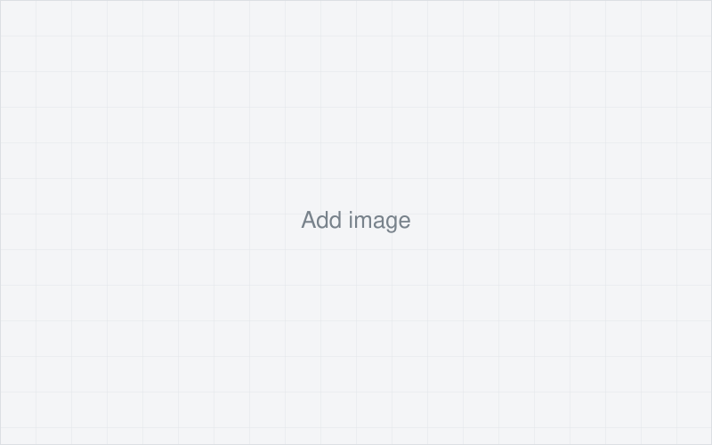

[Project 5 title]
[One-sentence summary: what the system was and what you did on it.]
Project overview
[Describe the system, product, experiment, or engineering problem in 3–5 sentences. What was it, what did it have to do, and where does it fit in a larger assembly or process?]
Objective and problem
[State what needed to be designed, improved, tested, diagnosed, or validated, and why it mattered. Include the constraints you were working inside: load, envelope, budget, schedule, standard, or test condition.]
- [Constraint or requirement 1]
- [Constraint or requirement 2]
- [Constraint or requirement 3]
My role
[Describe your individual contribution. Be specific about what you owned versus what the team did: which subsystem, which analysis, which test, which drawings.]
Engineering process
- Requirements. [What requirements did you define or inherit, and from where?]
- Concept development. [How many concepts, and how did you choose between them?]
- Calculations. [Hand calculations, sizing, tolerance stack-up, FEA, circuit analysis.]
- CAD and component selection. [Models, assemblies, drawings, purchased parts and why.]
- Instrumentation and circuit design. [Sensors, signal chain, wiring, DAQ setup.]
- Prototype and fabrication. [How it was built, by what methods, in what shop.]
- Testing. [Test setup, conditions, number of runs, what was measured.]
- Troubleshooting and iteration. [Failure modes found, root causes, design changes made.]
- Validation. [How you confirmed the final design met the requirements.]
Technical details
Design requirements
| [Requirement, e.g. design load] | [Add value and unit] |
|---|---|
| [Requirement, e.g. envelope] | [Add value and unit] |
| [Requirement, e.g. tolerance] | [Add value and unit] |
| [Requirement, e.g. accuracy] | [Add value and unit] |
| [Requirement, e.g. cycle life] | [Add value and unit] |
Analysis and calculations
- [Calculation performed and the result, e.g. stress, deflection, factor of safety]
- [Assumptions and how you checked them]
- [Add CAD or FEA image below in the figures section]
Hardware, sensors, and test equipment
- [Sensors and ranges]
- [DAQ, power supplies, oscilloscope, multimeter, load frame, other equipment]
- [Fixtures or test stands you built]
Materials and manufacturing
- [Materials and why they were selected]
- [Manufacturing methods: machining, 3D printing, sheet metal, welding, assembly]
Software and tools
- [CAD, FEA, circuit, and data analysis software used]
- [Scripts or code you wrote, and what they did]
Test procedure
- [Setup and instrumentation check]
- [Test conditions and loading or input steps]
- [Data recorded, sample rate, number of runs]
- [Pass or fail criteria]
Results
- [Add quantitative performance result, with units]
- [Add test result: accuracy, efficiency, repeatability, or margin against requirement]
- [Add improvement: weight, cost, cycle time, reliability, number of iterations]
- [Add failure mode found and how the design or process changed because of it]
What I took from it
[Two or three sentences on what you learned or would do differently. Keep it concrete and engineering-focused.]
Figures
